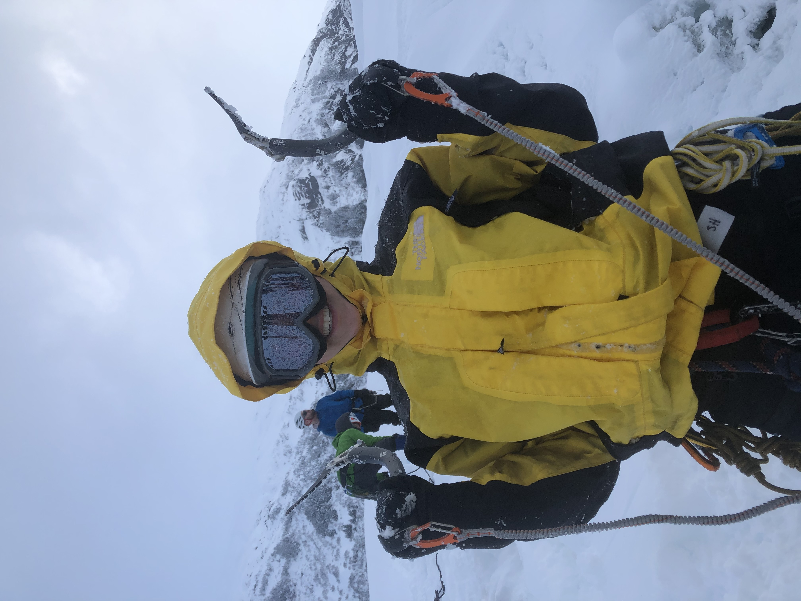

I am currently a graduate student at Montana State University in my second year of a MSc program in mathematics.
 Montana State University,
Montana State University, About me: I grew up in a tiny town on an island in Southeast Alaska. I went to University of Alaska Southeast in Juneau where I studied math. During this time, I spent a semester on exchange in Trieste, Italy studying and traveling. For the last three summers, I've commercial fished on the F/V Ruby as apart of a sustainable fishery in Bristol Bay. In my spare time I like to ski, climb, hike, kayak, or make ceramics.
